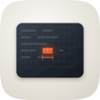
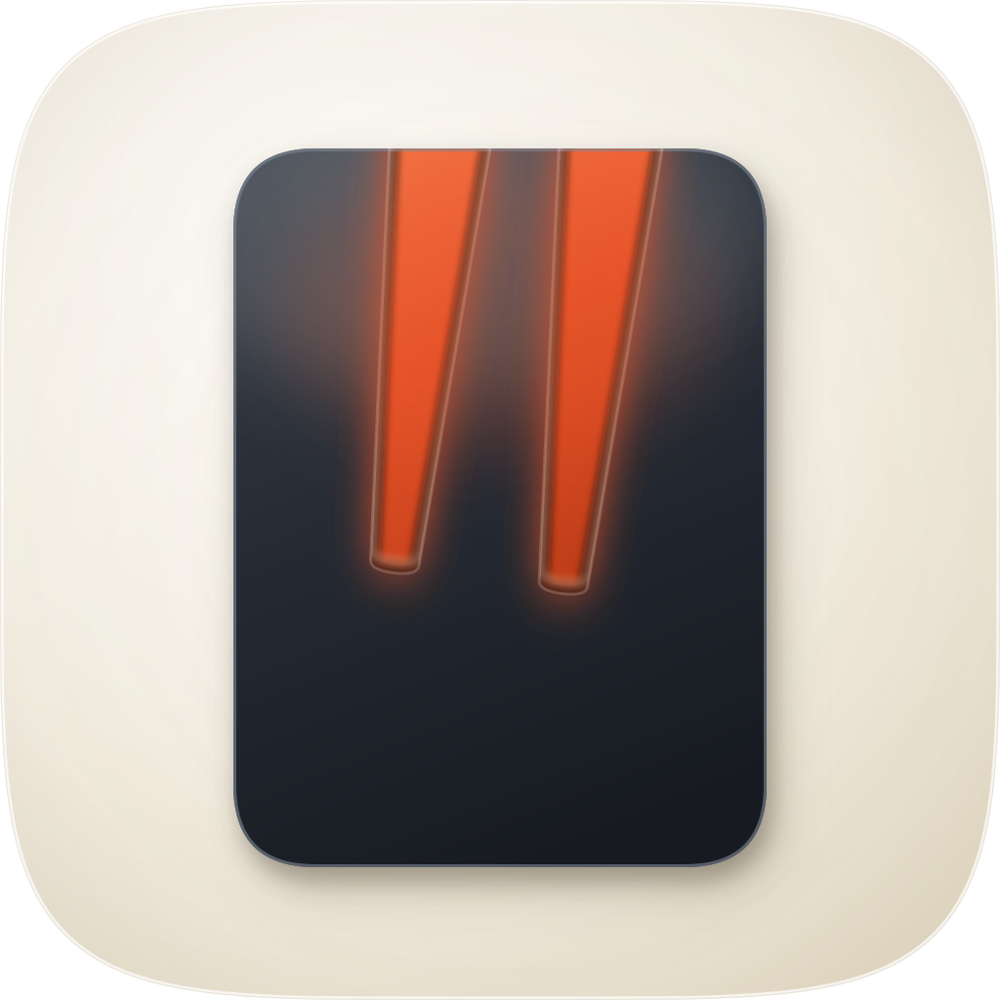
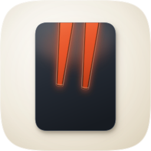
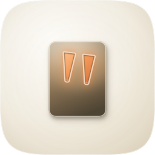
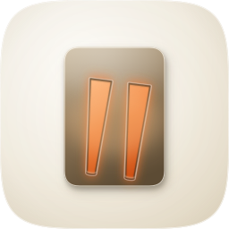

tui-craftclarify
Decorative marketplace tile, not an Icon Composer production package: the
material has to be in the file, because nothing downstream will add it. One engine
(hand-authored layered SVG, build_icon.py), four takes, master shipped from take 4.
The squircle is a clip rather than a baked corner radius, and there is no baked drop shadow, so
system tinting and the site's own rounding both still work.


128The 48 row is the one that matters most here: it is the marketplace tile and the
Finder list size, and an icon that survives 128 and 16 can still fail between them. The shipped
README row renders icon-256.png at 110px, which sits between the 128 and 64 columns.

tui-craftThis comparison is why the master is take 4 rather than take 3. Measured off the siblings rather than guessed: geminify's leaves fill about 65% of the tile, tui-craft's panel 72%, clarify's stack 78%. Takes 1 to 3 sat at 29%, 37% and 48%, and each read as a small tile adrift in a large field next to its neighbours. The master is 53% wide and 72% tall.
| Check | Verdict |
|---|---|
| One metaphor, not two | PASS — a cursor with a quote cut through it. Nothing else is in the frame. |
| One warm accent, spent once | PASS — vermilion on the two cuts and their light. No second hue anywhere. |
| Legible at 16px | PASS — resolves to a dark block with a bright notch across its top third. The two marks merge into one at 16, which is acceptable: the silhouette still says "block with the top opened". |
| Legible at 48px (marketplace tile) | PASS — both marks separate and the taper is visible. |
| Silhouette is its own | PASS — the open-topped notches break the rectangle. Take 3 did not clear this: a plain rounded rect with two enclosed slots read as a light-switch plate, and no amount of material work argues with a silhouette. |
| Squircle is a clip | PASS — <clipPath id="mask"> over the family path from squircle-path.txt. No baked radius, no baked shadow. |
| Layer structure | PASS — bg / mid / fg / highlight, in that order, with the aperture core drawn behind the body so the light reads as coming through rather than painted on. |
| Grounded, not floating | PASS — two-layer contact shadow: a broad warm cast plus a hard dark line under the lower edge. |
| Reads distinct from tui-craft | NOTE — both are slate devices on the set's ground. They separate on subject (one panel of ruled text versus one cursor with two cuts) and on mass, but at 16px the two are closer than any other pair in the set. Accepted deliberately: the alternative was a warm body, and two takes proved a mid-value warm body under a warm ground renders as mud. |
| Lower third of the body | NOTE — a large unbroken slate field. tui-craft carries a similar mass, so it is in family, but it is the weakest region of the composition and the first place a future revision should look. |
Bar: ≥10 / 12 with zero failures on checks 1–4 (mask
discipline, grid adherence, silhouette test, 16px squint). Take 1 is prose-only: its path
structure no longer exists in build_icon.py, and reinstating dead geometry to
photograph it would be worse than saying so. Takes 2 and 3 are reproducible from the parameter
sets in that file — python3 build_icon.py --take t2 icon-take2.svg.
| Take | Renders | Score | Verdict |
|---|---|---|---|
| 1 strokes beside a notched block not re-renderable |
no render — geometry removed |
6 / 12 fails 2, 3 |
Two quote wedges to the upper right of a block whose top-right corner was notched. Three failures at once: the notch read as a folded document corner rather than a caret (3, silhouette), the strokes floated with no visual link to the block (11, personality — two devices, not one), and the mass piled into the lower left with the accents stranded top-right (2, grid adherence). Rejected. |
| 2 enclosed slots, clay body 380×500 |
 12848
16
|
7 / 12 fails 2, 3 |
Moving the cuts inside the body fixed the floating (11 clears). It failed on silhouette (3): a plain rounded rectangle with two enclosed vertical slots is a light-switch plate, and no amount of material work argues with a silhouette. It also failed grid adherence (2) at 29% of the tile's width, and the clay ramp rendered olive rather than clay (6, palette economy — the warm mid-tones desaturate under a warm ground). Rejected. |
| 3 bigger block, warmer clay 452×624 |
 12848
16
|
9 / 12 fails 3 |
Grid adherence clears at 44% wide, and the deeper cuts read as marks rather than as switches. Silhouette (3) still fails for the same reason take 2 did, and the warm body still goes to mud (7, figure-ground: the glyph's lights merge with the ground while its darks turn brown). One point off the bar, and failing a non-negotiable check. Rejected. |
| 4 — master open notches, slate body 546×736 |
128
48
16
|
11 / 12 clears 1–4 |
Ships. Cuts break the top edge, so the silhouette is its own (3 clears). Slate at tui-craft's values fixes figure-ground and the mud (6, 7). Scaled to 53%×72% against measured sibling masses (2). The point dropped is 10, variant robustness: see the liability below. |
Recommendation: ship take 4 as icon.svg / icon.png /
icon-256.png / icon-128.png. It scores 11 / 12 and
clears all four non-negotiable checks.
| Known liability | Assessment |
|---|---|
| #10 variant robustness — the point dropped | The identity rests on a near-black body against a warm porcelain ground, so under a Dark or Tinted variant the body loses its separation from the field and the two lit cuts carry the whole icon on their own. They do carry it — the silhouette survives — but the object stops reading as a device and starts reading as two floating marks, which is take 1's failure arriving by a different route. Untested against real Dark and Tinted renders; this is a reasoned prediction, not a measurement, and it is the first thing a revision should measure. |
| Kinship with tui-craft at 16px | Both are slate devices on the set's ground. They separate on subject and mass at 48px and above, but at 16px they are closer than any other pair in the set. Accepted deliberately: the alternative was a warm body, and takes 2 and 3 both proved a mid-value warm body under a warm ground renders as mud. |
| The lower third of the body | A large unbroken slate field. tui-craft carries a similar mass so it is in family, but it is the weakest region of the composition and the second place a revision should look. |
| One engine, not three | The commission floor is three engines (hand-authored SVG, Arrow vector, corpus-referenced raster). Only Engine A ran: this is a marketplace tile rather than an app icon commission, and the raster engine needs an image model this session did not spend on. Stated as a deviation rather than presented as a full commission, and the three takes above are three genuinely different hand-authored attempts rather than three renders of one. |
Geometry and material are named constants in build_icon.py; a revision
is a parameter edit there, never path surgery in icon.svg. Rebuild with
python3 build_icon.py, then
rsvg-convert -w 1024 -h 1024 icon.svg -o icon.png and the same at 256 and 128.
Re-render this sheet's sources with
python3 ../../create-mac-icon/skills/create-mac-icon/scripts/audit_sheet.py render .
and prove every image on it resolves with audit_sheet.py check . — a contact sheet
whose images 404 renders as an empty page that no script and no summary will mention.